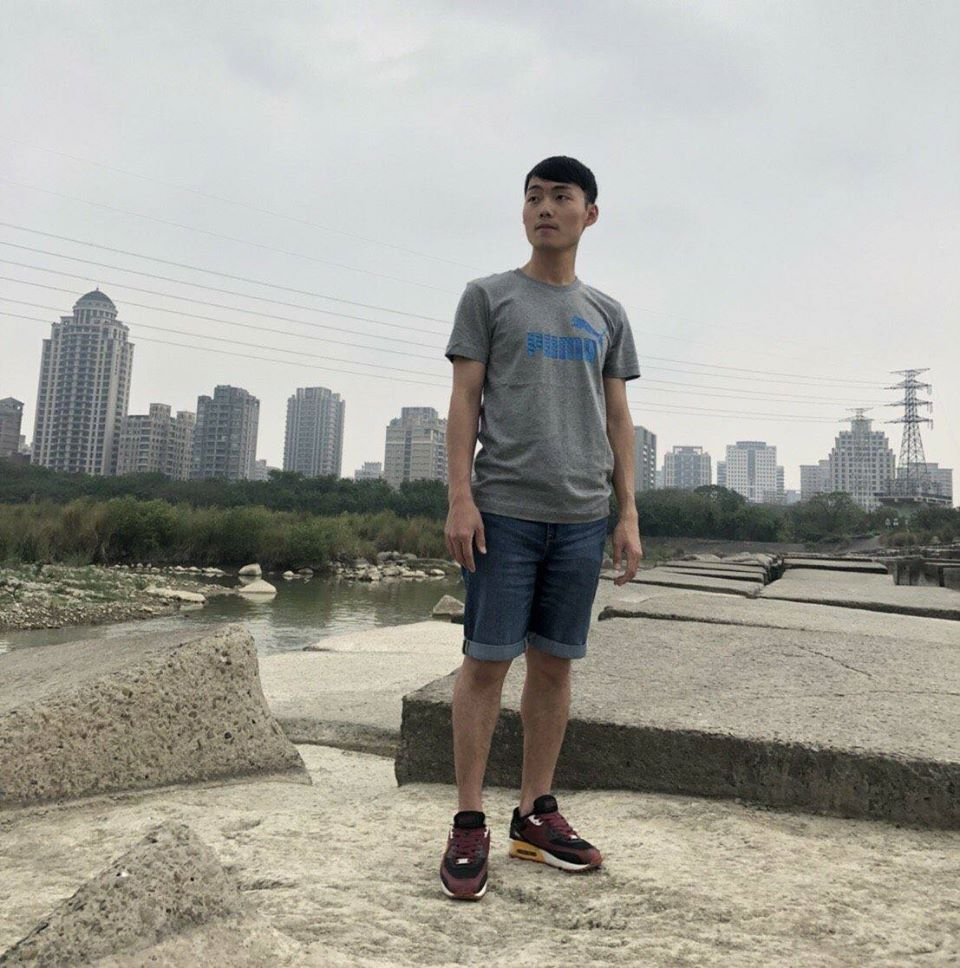

張宇豐
Higher Education
Master ,
Institute of Finance
,
National Chiao Tung University
Thesis:
評價具有提前解約及懲罰條款之反向房屋抵押貸款
Adviser: Prof.
Tian-Shyr, Dai
Talks and Presentations
Lee-Carter-Model
RM報告
On-the-valuation-of-reverse-mortgages-with-regular-tenure-payments